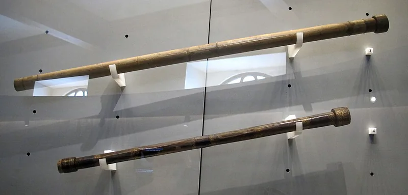

1608 — The First Light-Gatherers
In the autumn of 1608, the Dutch spectacle-maker Hans Lipperhey applied for a patent on an instrument that magnified distant objects using convex and concave lenses. Word spread quickly across Europe. By the following year, Galileo Galilei had built his own improved version and turned it toward the night sky — revealing the craters of the Moon, the phases of Venus, and four moons orbiting Jupiter.